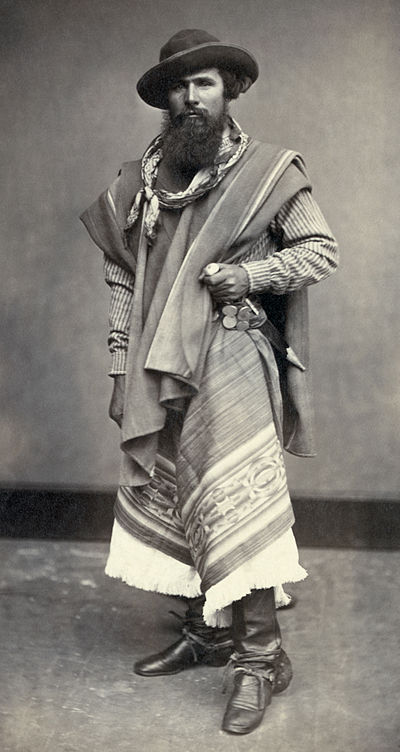

El Gaucho

Description
This hot dog is inspired by the question "What would a skilled horseman want to eat after a long day of being a skilled horseman?"
Ingredients
- 100% Beef Wiener
- Bun for Wiener
- Flank Steak
- Blistered Tomatoes
- Chimichurri
Steps
- Cook flank steak to your liking.
- Cook wiener to your liking.
- Toast bun to your liking.
- Blister tomatoes.
- Place slices of flank steak to the left of the wiener.
- Add blistered tomatoes and chimicurri on top of the wiener.